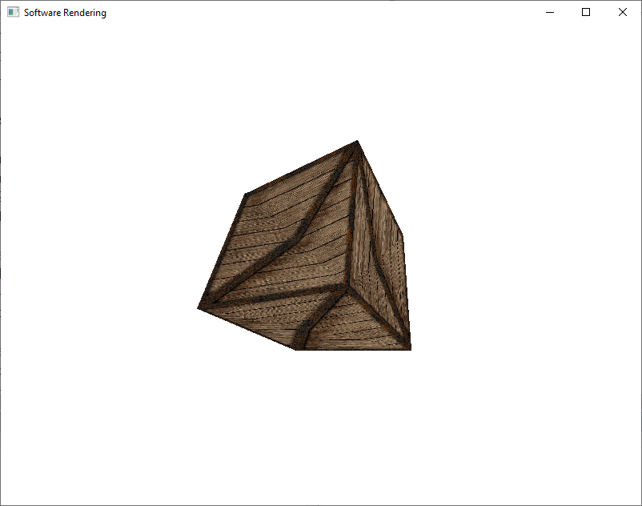
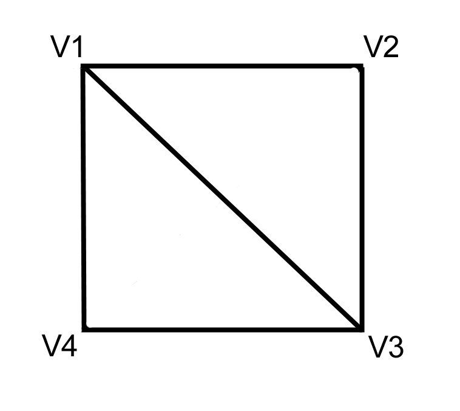
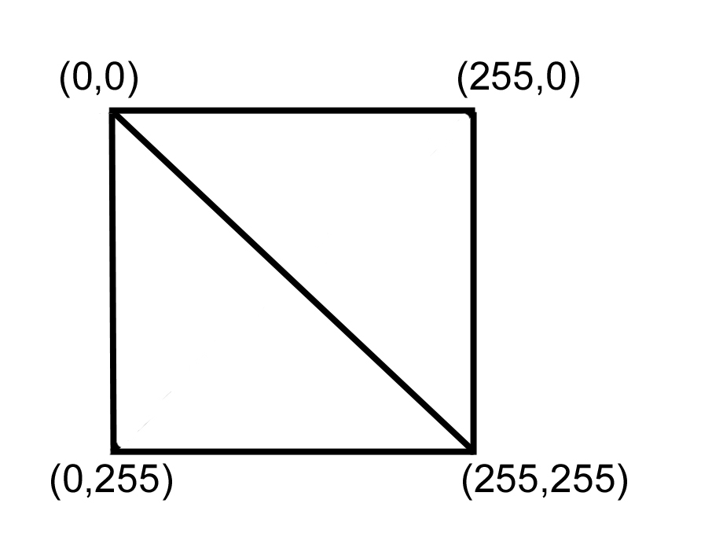
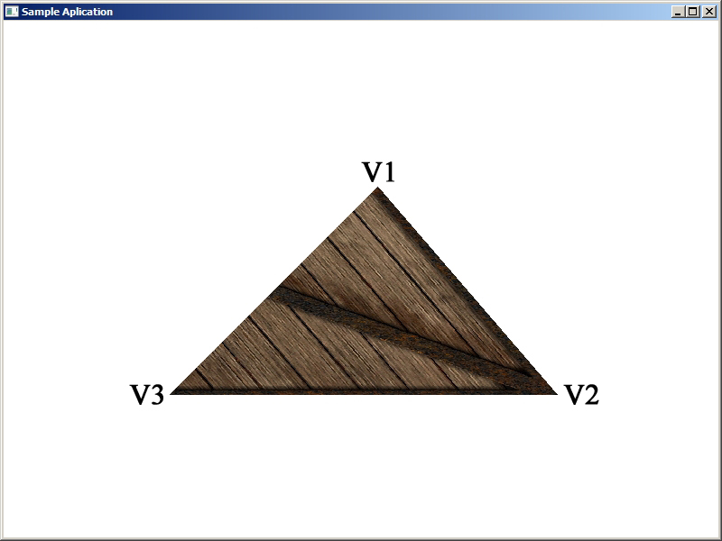
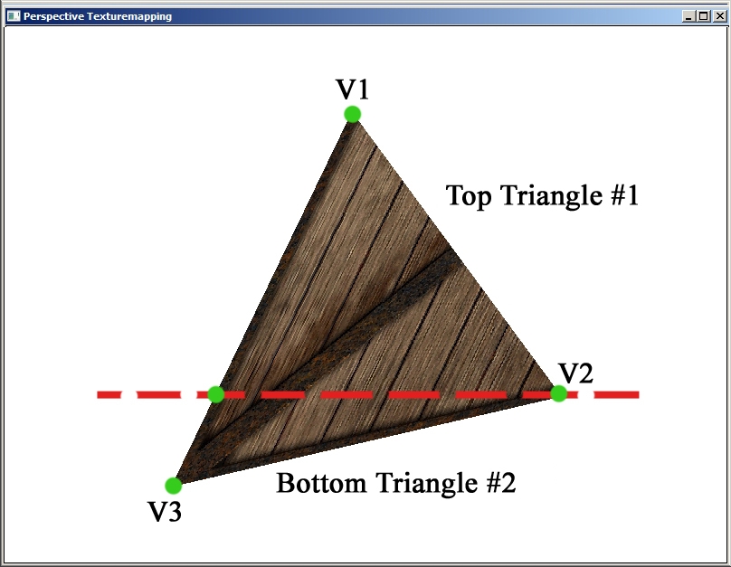
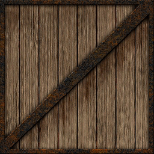
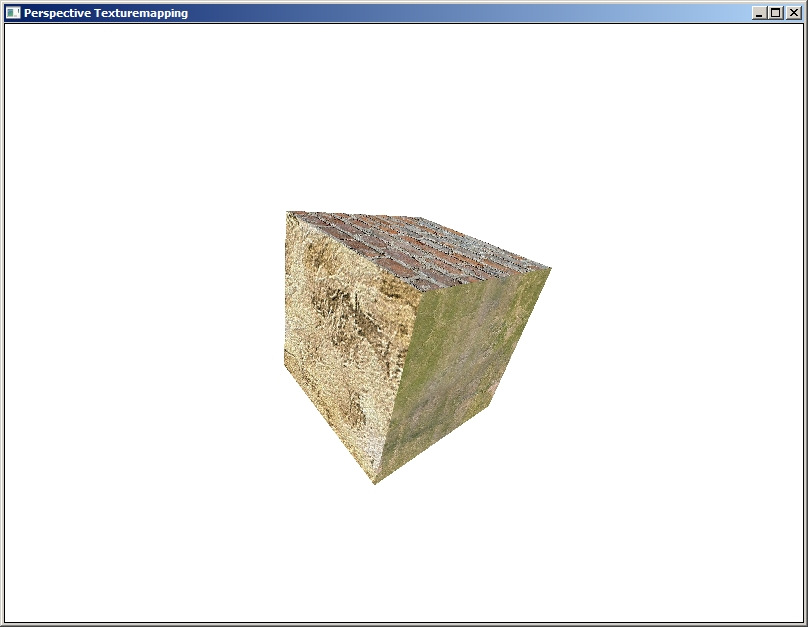

Загрузить архив с примерами ЗДЕСЬ.
В общем случае тестурирование бывает двух видов- афинное текстурирование (проявляються искажения проекции, наложенная тестура выглядит с искажениями), и текстурирование с учетом перспективы (без проявления искажений проекции). Афинное текстурирование выполняется таким способом. Так как в предыдущих примерах мы интерполировали цвета от веришны к вершине, так в афинном текстурировании интерполируются текстурные координаты- от вершины к вершине. Это текстурирование без учета глубины вершин. Поэтому при повороте объекта наблюдаются искажения. Афинное текстурирование хорошо когда полигон (треугольник) обращен прямо в сторону камеры (т.е. без поворота). Можете попробовать сделать афинное текстурирование сами (так как мы в прошлых примерах интерполировали цвета вы можете сами интерполировать текстурные координаты), сделать для вращающегося куба афинное текстурирование- и вы заметите искажения в отображении текстуры при поворотах куба (например вращать куб вокруг Y оси как в предыдущих примерах).
Пример Афинного текстурирования - наблюдаются искажения наложения текстуры.
Пример Афинного текстурирования на рисунке ниже. Как видно текстура накладывается с искажениями.
Результат работы программы для данной главы показана на анимации ниже, демонстрация наложения текстуры с учетом перспективы.

Как указываются текстурные координаты. Предположим у нас есть два треугольника которые состоят из 4х вершин V1, V2, V3, V4 (см. рисунок ниже). Первый треугольник V1, V2, V3 и второй треугольник V1, V3, V4.
Если у нас рисунок текстуры размером 256 на 256 пикселей, то текстурные координаты для этих двух треугольников будут такими (см. рис. ниже):
V1 (x,y,z, tu, tv); V2 (x,y,z, tu, tv); V3 (x,y,z, tu, tv); V1 (x,y,z, tu, tv); V3 (x,y,z, tu, tv); V4 (x,y,z, tu, tv);
V1 (x,y,z, 0, 0); V2 (x,y,z, 255, 0); V3 (x,y,z, 255, 255); V1 (x,y,z, 0, 0); V1 (x,y,z, 255, 255); V1 (x,y,z, 0, 255);
tu это горизонтальная текстурная координата, tv это вертикальная текстурная координата.
Создадим дополнительную структуру для хранения текстурных координат:
struct tex_coord2
{
int tu, tv;
};
Принято текстурную координату по оси X обозначать буквой u, а текстурную координату по оси Y обозначать буковй v. В качестве примечания скажу, что в DirectX/OpenGL текстурные координаты берутся от 0 до 1.0, а не как у нас в примере от 0 до 255. В следующих примерах мы изменим код и тоже будем использовать текстурные координаты от 0 до 1.0.
Cлово "пиксель" обозначает один элемент рисунка текстуры, а слово "тексель" обозначает один пиксель текстуры в текстурных координатах. То есть когда мы берем сам рисунок текстуры отдельно от нашего приложения- мы говорим пиксель. Но когда мы берем этот рисунок и накладываем его как текстуру на треугольники- мы упоминаем тексель - то есть пиксель рисунка в каких то текстурных координатах. Поясню сказаное на примере. К примеру у нас есть квадратное изобржаение BMP размером 64 на 64 пикселя. И у нас на экране есть квадрат из двух треугольников размером 64 на 64 пикселя. Мы на этот квадрат накладываем наше изображение BMP. Тогда один пиксель изображения соответствует одному текселю на текстуре квадрата. Но к примеру квадрат имеет размеры в два раза больше 128 на 128 пикселя. Тогда один пиксель изображения BMP соответсвтует двум текселям на текстуре. То есть в таком случае будет два одинаковых текселя по высоте и по ширине на один пиксель изображения.
Модель куба для данной главы создана в программе трехмерного моделирования 3DSMax, т.е. модель была создана автоматически программой, поэтому нам не нужно задумыватся почему координаты вершин куба и текстурные координаты так указаны- это сделала программа 3DSMax. Но конечно можно поламать голову над моделью куба, и самому сделать модель с указанием текстурных координат.
Мы будем рассматривать текстурирование с учетом перспективы, будем текстурировать треугольник, т.е. берем тексель из текстуры и наносим цвет- с помощью функции GDI SetPixel(). Как мы ранее делали, теперь попробуем тем же методом, когда мы затеняли треугольник сплошным цветом, используя интерполяцию и наклон левой и правой стороны треугольника, разбиение треугольника на два- с плоским низом и плоским верхом- попробуем наложить на треугольник текстуру с помощью метода текстурирования учитывая перспективу. Как это происходит, т.е. какой краткий алгоритм.
Псевдокод этого алгоритма на С++ выглядит следующий образом.
V1
V2 V3
float iz1 = 1 / z1;
float itu1 = tu1 / z1;
float itv1 = tv1 / z1;
float iz2 = 1 / z2;
float itu2 = tu2 / z2;
float itv2 = tv2 / z2;
float iz3 = 1 / z3;
float itu3 = tu3 / z3;
float itv3 = tv3 / z3;
//начальная точка для левой стороны треугольника
float iz_left = iz1;
float tu_left = itu1;
float tv_left = itv1;
float x_left = x1;
//приращение для левой стороны треугольника
float dzdy_left = (iz2 - iz1) / (y2 - y1);
float dtudy_left = (itu2 - itu1) / (y2 - y1);
float dtvdy_left = (itv2 - itv1) / (y2 - y1);
float dxdy_left = (x2 - x1) / (y2 - y1);
//начальная точка для правой стороны треугольника
float iz_right = iz1;
float tu_right = itu1;
float tv_right = itv1;
float x_right = x1;
//приращение для правой стороны треугольника
float dzdy_right = (iz3 - iz1) / (y3 - y1);
float dtudy_right = (itu3 - itu1) / (y3 - y1);
float dtvdy_right = (itv3 - itv1) / (y3 - y1);
float dxdy_right = (x3 - x1) / (y3 - y1);
//цикл по координате y
for ( int y = y1; y < y2; y++ )
{
//готовим данные для интерполяции по оси X
//начальная точка по X и приращение по X
//начальная точка по X
iz = iz_left;
itu = itu_left;
itv = itv_left;
//приращение по X
int dzdx;
int dtudx;
int dtvdx;
float dx = (x_right - x_left);
if(dx > 0) // делить на 0 нельзя
{
dzdx = (iz_right - iz_left)/dx;
dtudx = (itu_right - it_left)/dx;
dtudx = (itu_right - itu_left)/dx;
}
else
{
dzdx = 0;
dtudx = 0;
dtvdx = 0;
}
//цикл по координате X
for ( int x = x_left; x < x_right; x++ )
{
float z = 1 / iz
float u = itu * z;
float v = itv * z;
//используем u,v для извлечения пикселя текстуры
//переходим к сл.циклу
//приращение на каждом пикселе X
iz += dzdx;
itu += dtudx;
itv += dtvdx;
}
//приращение на каждой строке Y для левой стороны треугольника
iz_left += dzdy_left;
itu_left += dtudy_left;
itv_left += dtvdy_left;
x_left += dxdy_left;
//приращение на каждой строке Y для правой стороны треугольника
iz_right += dzdy_right;
itu_right += dtudy_right;
itv_right += dtvdy_right;
x_right += dxdy_right;
}
z = 1 / (1/z) u = (u/z) * z v = (v/z) * z
Вот как выглядит текстурированный треугольник для нашего примера.
Код проекта показан ниже, сам проект текстурирования одного треугольника можно загрузить /src/02.004-perspect_tex/Textured_Tri.
void CMyApp::RenderScene()
{
vector3 v1; tex_coord2 t1;
vector3 v2; tex_coord2 t2;
vector3 v3; tex_coord2 t3;
v1.x = 415.0; v1.y = 183.0; v1.z = 12.0;
t1.tu = 255; t1.tv = 0;
v2.x = 183.0; v2.y = 415.0; v2.z = 12.0;
t2.tu = 0; t2.tv = 255;
v3.x = 615.0; v3.y = 415.0; v3.z = 12.0;
t3.tu = 255; t3.tv = 255;
Draw_Textured_Triangle(v1, t1, v2, t2, v3, t3 );
}
void CMyApp::Draw_Textured_Triangle(vector3 v1, tex_coord2 t1,
vector3 v2, tex_coord2 t2,
vector3 v3, tex_coord2 t3)
{
float iul = t2.tu / v2.z - t1.tu / v1.z;
float ivl = t2.tv / v2.z - t1.tv / v1.z;
float izl = 1.0f / v2.z - 1.0f / v1.z;
float ixl = v2.x - v1.x;
float iur = t3.tu / v3.z - t1.tu / v1.z;
float ivr = t3.tv / v3.z - t1.tv / v1.z;
float izr = 1.0f / v3.z - 1.0f / v1.z;
float ixr = v3.x - v1.x;
float dyl = v2.y - v1.y;
float dudyl = iul / dyl;
float dvdyl = ivl / dyl;
float dzdyl = izl / dyl;
float dxdyl = ixl / dyl;
float dyr = v3.y - v1.y;
float dudyr = iur / dyr;
float dvdyr = ivr / dyr;
float dzdyr = izr / dyr;
float dxdyr = ixr / dyr;
float xl = v1.x;
float ul = t1.tu / v1.z;
float vl = t1.tv / v1.z;
float zl = 1.0f / v1.z;
float xr = v1.x;
float ur = t1.tu / v1.z;
float vr = t1.tv / v1.z;
float zr = 1.0f / v1.z;
//*****************
HDC hDC = GetDC(hWnd);
int x1, x2;
int dx;
float ui, vi, zi;
float du, dv, dz;
for ( int yi = (int) v1.y; yi < (int)v2.y; yi++ )
{
x1 = (int) xl;
x2 = (int) xr;
ui = ul;
vi = vl;
zi = zl;
dx = (x2 - x1);
if(dx > 0) // делить на 0 нельзя
{
du = (ur - ul)/dx;
dv = (vr - vl)/dx;
dz = (zr - zl)/dx;
}
else
{
du = ur - ul;
dv = vr - vl;
dz = zr - zl;
}
for (int xi=x1; xi < x2; xi++)
{
float z = 1.0f/zi;
float u = ui * z;
float v = vi * z;
int t = (int)u + (((int)v) << 8);
t = t*3;
SetPixel(hDC, xi, yi, RGB(pRes[t + 2],pRes[t + 1],pRes[t]));
ui+=du;
vi+=dv;
zi+=dz;
}
xl+=dxdyl;
ul+=dudyl;
vl+=dvdyl;
zl+=dzdyl;
xr+=dxdyr;
ur+=dudyr;
vr+=dvdyr;
zr+=dzdyr;
}
}
В следующей строке кода сдвиг на 8 влево эквивалентен умножению на 256, так как число 2 в степень 8 равно 256. Сдвигом иногда пользуются так как эта операция работает быстрее по производительности чем простое умножение.
int t = (int)u + (((int)v) << 8);
Теперь вкраце рассмотрим программу текстурирования модели куба при помощи текстурирования с учетом перспективы, проект (использовалась функция BitBlt и SetPixel) можно загрузить /src/02.004-perspect_tex/Perspective_Tex1. Так же этот пример но использовалась функция DrawDibDraw можно загрузить /src/02.004-perspect_tex/Perspective_Tex2. В начале функции Draw_Textured_Triangle() мы выполняем деление 1/z и tu/z, tv/z. Далее функция (точнее макрос) swapfloat() меняет содержимое вершин v1, v2, v3 так что бы самой верхней была вершина v1, затем по высоте находилась вершина v2, и затем ниже вершина v3 - это нужно что бы правильно расположить вершины перед вычислением наклона и соотвественно- вычисления приращения. Затем мы вычисляем переменную int side; которая нам скажет- длинее левая сторона у треугольника, или правая. Почему это нужно- например мы идем по одной строке развертки- от v1 до v2 и затем от v2 до v3, причем длинее правая сторона треугольника. Переменная int side; нам говорит какая сторона длинее у треугольника, что бы правильно разбить этот один треугольник на два треугольника, вычислить наклон для расчета приращения, и знать- где с правой стороны находиться координата v2.y когда мы спускаемся вниз по правой стороне от v1 до v3- то v2.y нам указывает что здесь нужно начинать другую часть треугольника. Зная какая сторона у треугольника длиннее, мы проводим по одной строке развертки от y1 до y2, и от y2 до y3, таким образом рисуя два треугольники- мы разбиваем исходный треугольник на два. Фактически, когда у нас есть треугольник с длинной стороной, мы разбиваем этот треугольник на два треугольника, и рисуем отдельно верхнюю часть, потом нижнюю как на рисунке ниже.
Алгоритм работы функции CMeshManager::Draw_Textured_Triangle() следующий.
void CMeshManager::Draw_Textured_Triangle(vector3 v1, tex_coord2 t1,
vector3 v2, tex_coord2 t2,
vector3 v3, tex_coord2 t3)
{
1) делим 1/z и tu/z, tv/z
2) сортируем вершины что бы v1.y < v2.y и v2.y < v3.y
3) определяем какая сторона треугольника длиннее для общего случая треугольника
4) если плоский верх v1.y == v2.y
5) если плоский низ v2.y == v3.y
6) если левая сторона длинее вычисляем left_delta, right_delta и вершину начала интерполяции по Y координате
7) рисуем верхний треугольник и затем нижний (но может быть плоский верх или низ)
8) если правая сторона длинее вычисляем left_delta, right_delta и вершину начала интерполяции по Y координате
9) рисуем верхний треугольник и затем нижний (но может быть плоский верх или низ)
}
Как работает функция void CMeshManager::Draw_Textured_Poly() показано ниже.
void CMeshManager::Draw_Textured_Poly(int y1, int y2)
{
1) начинаем цикл от y1 до y2
2) вычисляем dela для начала интерполяции координат по X
3) выбираем точку начала и конца цикла по X
4) начинаем цикл от x_left до x_right
5) в цикле возвращаем значения z, tu, tv к обычному виду
6) используем tu, tv что бы получить тексель из текстуры
7) добавляем delta к значению x_left
8) по завершению цикла X координаты добавляем delta_left, delta_right
9) возвращаемся к началу цикла координаты Y
}
Так же в качстве backbuffer можно использовать задний буфер DirectX. Для этого нужно создать устройство DirectX с параметром D3DPRESENTFLAG_LOCKABLE_BACKBUFFER, перед рисованием получить backbuffer и нарисовать куб. Пример для DirectX 9 можно загрузить /src/02.004-perspect_tex/Perspective_Tex3. Пример для DirectX 12 можно загрузить /src/02.004-perspect_tex/Perspective_Tex4.
Ниже показан рисунок текстуры который мы накладываем на куб:
Размер рисунка с текстурой 256 пикселей на 256 пикселей. То есть координаты u и v могут быть следующими:
Размер рисунка текстуры 256 на 256 пикселей Текстурные координаты Координата по горизонтали u от 0 до 255 Координата по вертикали v от 0 до 255
Мы должны помнить, что если размер массива к примеру 256 элементов, то эти элементы имеют индексы от 0 до 255, а не от 0 до 256.
В функции Draw_Textured_Poly у нас есть такая строка:
int t = (int)u + (((int)v) * nTextureWidth);
У нас есть двухмерные текстурные координаты u и v которые максимум могут быть равны nTextureWidth и nTextureHeight, и нам необходимо перевести эти текстурные координаты в индекс одномерного массива t, а затем по этому индексу t из одномерного массива получить цвет пикселя.
В следующей строке кода мы на всякий случай просто делаем проверку на выход за пределы массива:
if( t < 0 || t > (nTextureWidth * nTextureHeight - 1) ) continue;
Как на одну модель наложить несколько разных текстур проект можно загрузить /src/02.004-perspect_tex/Perspective_Tex5. Результат работы программы показан на скриншоте ниже.
Какие изменения в проекте. Во первых мы используем три разных текстуры, и для них нужно выделить место. Это переменная в классе CMeshManager.
unsigned char **m_pLevelTile;
Далее мы выделяем место для хранения трех изображений. Это происходит в функции Init_Cube.
m_pLevelTile = new unsigned char *[3];
Далее выполняем функцию загрузки изображения в переменную m_pLevelTile для каждой из трех текстур.
Load_BMP("texture1.bmp", 0);
Load_BMP("texture2.bmp", 1);
Load_BMP("texture3.bmp", 2);
В функции Load_BMP выделяется место для одной текстуры и копируются данные.
m_pLevelTile[tile] = new unsigned char [bih.biWidth*bih.biHeight*3]; memcpy(m_pLevelTile[tile], nStartData, bih.biWidth*bih.biHeight*3);
Затем в функции Draw_Cube мы используем нашу переменную которая указывает на изображение.
UINT tex = m_texture_index[i]; m_pRes = (UCHAR *) m_pLevelTile[tex]; Draw_Textured_Triangle(v1, t1, v2, t2, v3, t3 );
Так же в функции Init_Cube мы ввели массив m_texture_index который хранит номер текстуры (у нас текстуры 3) для каждого треугольника.
DWORD texture_index_temp[12] = {
0, 0,
1, 1,
2, 2,
0, 0,
1, 1,
2, 2 };
m_texture_index = NULL;
m_texture_index = new DWORD[12];
memcpy(m_texture_index, texture_index_temp, 12 * sizeof(DWORD));

Давайте теперь рассмотрим случай когда у нас текстурные координаты от 0 до 1.0 как в DirectX/OpenGL. Пример кода можно загрузить /src/02.004-perspect_tex/Perspective_Tex6. Во первых необходимо изменить структуру tex_coord2 что бы тип данных был не int а float:
struct tex_coord2
{
float tu, tv;
};
Далее в функции Init_Cube изменить сами текстурные координаты, массив текстурных координат:
tex_coord2 tex_coord_temp[24] = {
1.0f,1.0f,
1.0f,0,
0,0,
0,1.0f,
0,1.0f,
1.0f,1.0f,
1.0f,0,
0,0,
0,1.0f,
1.0f,1.0f,
1.0f,0,
0,0,
0,1.0f,
1.0f,1.0f,
1.0f,0,
0,0,
0,1.0f,
1.0f,1.0f,
1.0f,0,
0,0,
0,1.0f,
1.0f,1.0f,
1.0f,0,
0,0};
И наконец в функции Draw_Textured_Triangle умножить текстурные координаты на 255 - ширину и высоту рисунка текстуры в пикселях:
uiz1 = t1.tu * (nTextureWidth - 1) * iz1; viz1 = t1.tv * (nTextureHeight - 1) * iz1; uiz2 = t2.tu * (nTextureWidth - 1) * iz2; viz2 = t2.tv * (nTextureHeight - 1) * iz2; uiz3 = t3.tu * (nTextureWidth - 1) * iz3; viz3 = t3.tv * (nTextureHeight - 1) * iz3;
Если использовать текстуры разного размера загрузить проект /src/02.004-perspect_tex/Perspective_Tex7.
Какие изменения в проекте когда используюся несколько текстур разного размера. Сначала необходимо перейти к текстурным координатам от 0 до 1.0 (см.функцию Init_Cube). Далее мы определяем новую структуру, она хранит размеры каждой загруженой текстуры.
struct tex_param
{
int nTextureWidth;
int nTextureHeight;
};
Дальше необходимо определить эту структуру в слассе CMeshManager.
tex_param *tex_par;
В функции Init_Cube выделить место для трех элементов- у нас три разные текстуры:
tex_par = new tex_param[3];
Далее в функции Load_BMP инициализировать размеры для каждой текстуры.
tex_par[tile].nTextureWidth = bih.biWidth; tex_par[tile].nTextureHeight = bih.biHeight;
И наконец в функции Draw_Cube использовать данные для установки nTextureWidth и nTextureHeight для каждой текстуры.
nTextureWidth = tex_par[tex].nTextureWidth; nTextureHeight = tex_par[tex].nTextureHeight; Draw_Textured_Triangle(v1, t1, v2, t2, v3, t3 );
Конечно этот пример как и все остальные должен оставаться наглядным, поэтому я не стал его усложнять. К примеру можно было бы сделать одну структуру для хранения изображения и его размеров, нечто вроде такого:
struct tex_param
{
int nTextureWidth;
int nTextureHeight;
unsigned char *m_pLevelTile;
};
Билинейная фильтрация текстур показана в следующем проекте, загрузить проект /src/02.004-perspect_tex/Perspective_Tex8.
Еще один способ перспективного текстурирования, использовался в играх Quake 1 и Tomb Raider 1,2,3. В этом способе за один цикл на линии развертки рисуется 16 пикселей. Один пиксель рисуеться на экране с коррекцией перспективы, а остальных 15 при помощи линейной интерполяции. Такой подход позволял в 90х годах экономить вычислительные ресурсы- не все пиксели рассчитывались в учетом перспективы, компьютеры в то время были медленными. Есть два примера этого подхода к перспективному текстурированию. Первый проект использует функцию DrawDibDraw для заднего буфера- загрузить проект /src/02.004-perspect_tex/Perspective_Tex9. Второй проект я сделал для упрощения чтения кода, так как используется функция BitBlt и SetPixel в которой надо указать координаты x и y пикселя- это упрощает чтение кода. Загрузить второй пример /src/02.004-perspect_tex/Perspective_Tex10. Оба проекта ничем не отличаются от предыдущих, кроме как была изменена функция Draw_Textured_Poly().
Еще один подход к перспективному текстурированию, основан на двух предыдущих. Смотрите функцию Draw_Textured_Triangle(), там есть обновления в коде функции. Сначала в примере рассчитываются все наклоны, потом рисуется сам треугольник. Загрузить пример /src/02.004-perspect_tex/Perspective_Tex11.
Примеры /src/02.004-perspect_tex/Perspective_Tex9, /src/02.004-perspect_tex/Perspective_Tex10, /src/02.004-perspect_tex/Perspective_Tex11 используют метод перспективного наложения текстуры который называется scanline subdivision texturemapper - текстурирование с разделением строк развертки.
В следующем примере показан текстурированный куб овещенный желтым цветом- т.е. показано применение текстурирования и освещения. Весь секрет этого примера в использовании массива RGB_Talbe[] - смотри исходный код. Загрузить пример /src/02.004-perspect_tex/Perspective_Tex12.
В следующем примере показано одновременно перспективное текстурирование, афинное текстурирование, и перспективное scan line subdivision. Загрузить пример /src/02.004-perspect_tex/PerspAffineDivSub_Tex1. И второй пример /src/02.004-perspect_tex/PerspAffineDivSub_Tex2 - здесь во втором примере используется псевдоскалярное (косое) умножение векторов (удвоенная площадь треугольника). При запуске приложения примера экран будет пустой. Если во время работы приложения нажать и держать нажатой клавишу "Q" (анг.раскладка) - тогда режим отображения переключиться на перспективное. Если нажать "W" тогда режим отображения переключиться на афинное отображение текстур. Если нажать "E" тогда режим отображения переключиться на перспективное отображение scanline subdivision метод. Как работает scanline subdivision: есть строка пикселей - scan line - она разбивается на участки по 16 пикселей, в начале каждого участка первый пиксель выводиться на экран с учетом перспективы, а остальные пиксели в участке выводяться при помощи линейной интерполяции. И так участок за участком до конца строки (каждые 16 писелей). На старых компьютерах такой способ позволял экономить на вычислениях, что делало программу более производительной.
В коде, который приведен в примере, используется техника, известная как perspective correct scanline subdivision. Разберем, как она работает.
1. Разбиение на 16 пикселей: В коде есть переменная SUBDIVSIZE, которая указывает на количество пикселей, на которые разбивается текущий отрезок (или линия). Внутренний цикл с xcount >= SUBDIVSIZE делит длину отрезка между двумя точками (x1 и x2) на несколько частей, обычно по 16 пикселей (в зависимости от значения SUBDIVSIZE). Это разбиение позволяет выполнять более точные расчеты для каждого пикселя по мере движения вдоль линии.
2. Perspective correct для первого пикселя: Для первого пикселя каждого сегмента выполняется более точный расчет глубины и текстурных координат. Это делается в следующих строках:
z = 65536 / iz; u2 = (int)(uiz * z); v2 = (int)(viz * z);
Тут используется перспективная коррекция, которая учитывает глубину пикселя, что позволяет получать правильные текстурные координаты с учетом перспективы.
3. Линейная интерполяция для остальных пикселей: После того как первые пиксели рассчитываются с использованием перспективной коррекции, для оставшихся пикселей в линии применяется линейная интерполяция. Это происходит следующим образом:
du = (u2 - u1) >> SUBDIVSHIFT; dv = (v2 - v1) >> SUBDIVSHIFT;
Линейная интерполяция производится для текстурных координат (u, v) и глубины (z). Для каждого следующего пикселя по оси X координаты интерполируются с фиксированным шагом, что позволяет постепенно двигаться от одного значения к другому.
Таким образом, такой принцип работы:
- Перспективная коррекция применяется к первому пикселю каждого сегмента.
- Для остальных пикселей в этом сегменте используется линейная интерполяция текстурных координат и глубины.
В результате, несмотря на то, что текстуры интерполируются линейно, использование перспективной коррекции для первого пикселя исправляет искаженные текстуры при больших углах обзора, обеспечивая более точное отображение.
Первый пиксель рассчитывается с учетом перспективы, остальные пиксели в сегменте — это 15 пикселей - при помощи линейной интерполяции, если SUBDIVSIZE = 16.
Вот как это работает:
- Первый пиксель: для первого пикселя сегмента рассчитывается точное значение глубины (z) и текстурных координат (u, v), с применением перспективной коррекции.
- Остальные 15 пикселей: для них используется линейная интерполяция, чтобы рассчитать соответствующие значения текстурных координат и глубины. Это делается путем деления разницы между начальными и конечными значениями (для u, v, и z) на количество пикселей, на которые разбивается сегмент.
Таким образом, если SUBDIVSIZE = 16, то в сегменте будет 16 пикселей, из которых первый рисуется с перспективной коррекцией, а оставшиеся 15 пикселей — с линейной интерполяцией.
В этом примере /src/02.004-perspect_tex/Perspective_Tex_Z_Depth можно отладчиком Visual Studio проследить как меняется tu (текстурные координаты) в зависимости от интерполяции tu/z и 1/z.
В примере /src/02.004-perspect_tex/Perspective_Tex_Quake показан способ перспективного текстурирования который использовался в игре Quake 1.
В примере /src/02.004-perspect_tex/Perspective_Tex_Barycentric показан способ перспективного текстурирования при помощи барицентрических координат.